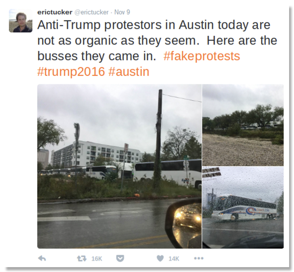

While Googling “fake news”, the results that came up were: “fake news article simulator”, “fake news generator”, “fake news detector”. These days fake news if very easy to fabricate. And with all the current social media platforms, it is very easy to spread to a large audience. People get very compelled to believe what is being spread. Because fake news is very compelling is why it is very dangerous. Some might not see fake news as being a big issue. And say that people who do fall for fake news, just need to be more careful and do their research. This can be hard for the elderly or children who aren’t as tech savvy/or are naïve. Children and the elderly are the primary demographic that tend to fall for fake news. It is not always that easy to determine what exactly is fake news. Fake news can be made in a way that really makes it seem like it is true. This is what makes it dangerous. FAKE NEWS IS A CRISIS. In our latest election, the own president of the United States, spread fake news about mail-in ballots. How can fake news is not a crisis when it started affecting democracy. the government, people’s lives? Fake news is not just limited to harmless headlines of celebrities dating/breaking up. It brings harsher consequences.
What is fake news?
The definition of fake news is pretty much in the name. Fake-News. False/misleading information presented by the media, or an individual. Fake news can be made with the intention of deceiving others in order to gain something.
Fake news can be split into different categories here are a few examples:
- Political fake news
- Celebrity fake news
- Speculation fake news
- Can be tied with conspiracy theories and rumors
Why people fall for fake news?
People fall for fake news because it reinforces a person’s own bias of what they already believe in, fake news is always sensational, it isn’t boring. Fake news also appeals to our emotions, clickbait. Implicit bias, confirmation bias. People with lower attention spans, elderly/young often fall for fake news. news appeals to our emotions, clickbait. Implicit bias, confirmation bias. Fake news uses rhetoric’s in many was to intrigue people to believe in it. By using logos, ethos, pathos, detecting bias’s, etc…….(EXPAND MORE ON RHETORICS USED)
Why fake news is dangerous?
As stated earlier fake news is dangerous because it can cause series problems. The example I used earlier shows a current situation and how far misinformation can affect others. (reword)….Donald Trump is still stating that their has been fraud in the latest election. He still states this with lack of evidence. And overall, not being able to prove any of his statements on voter fraud. This has led to him denying to leave the white house and his supporters believing him. This has lead to his supporters….. (FIND MORE INFORMATION ON WHAT SUPPORTORS HAVE DONE). This is a current example but overall what make fake news dangerous is because it can spread violence against a certain group of people (example corona virus and violence against the Asian community rising), Promote racist ideas, cause fear, divide people, stop progression etc.
A closer look into a fake news story:
Let’s focus on a fake news story and the effects it has caused. The fake news story I will be discussing is the Eric Tucker Tweet……..(ADD HIGHLIGHTS OF STORY)
How to combat fake news:
Conclusion:
Works Cited:
- “4 Reasons Why Fake News Is So Compelling.” Turnitin, 4 Dec. 2020, www.turnitin.com/blog/4-reasons-why-fake-news-is-so-compelling.
- “Fake News: What Is Fake News and Why Should We Care?” LibGuides, butlercc.libguides.com/fakenews/.
- “Fake News: Why Do People Fall for Fake News?” Research Guides, libguides.tru.ca/fakenews/falling.
- “How Fake News Spreads like a Real Virus.” Stanford School of Engineering, 22 Oct. 2019, engineering.stanford.edu/magazine/article/how-fake-news-spreads-real-virus.
- Maheshwari, Sapna. “How Fake News Goes Viral: A Case Study.” The New York Times, The New York Times, 20 Nov. 2016, www.nytimes.com/2016/11/20/business/media/how-fake-news-spreads.html?_r=0.
- “What Is ‘Fake News’ ?” 30sec To Check It Out, 6 Mar. 2019, 30secondes.org/en/module/what-is-fake-news/.